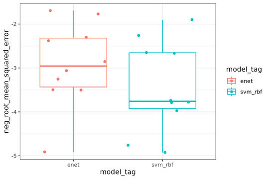

{rpwf} is a lightweight R and Python package that enables:
- data engineering in
with tidymodels.
- hyper parameter grids generation using the dials functions such as
grid_max_entropy().
- vast libraries of data transformation methods such as splines basis expansion, data reduction, and multiple imputation.
- hyper parameter grids generation using the dials functions such as
- testing the generated data transformation pipeline in
with scikit-learn.
- streamlining the use of HPC and cloud computing to speed up feature engineering experimentation.
Installation
R
- Install the package from github
# install.packages("devtools")
devtools::install_github("hhp94/rpwf", branch = "master")Python
- Setup a python environment with conda
conda create -n py39 python=3.9.13 anaconda- You’ll need the the following python packages installed in your python environment.
pandasandscikit-learnshould already be installed with the above command.- sqlalchemy
- pandas
- pandas-downcast
- pyarrow
- scikit-learn
- xgboost
- pins
- pyyaml
- any other machine learning library such as
lightgbmand etc.
- sqlalchemy
conda activate py39
conda install pyarrow sqlalchemy xgboost pyyaml
python -m pip install pandas-downcast
python -m pip install pins- Next, copy the python codes into any folder with
rpwf_cp_py_codes(). Here I’m just copying the codes to myhome/optfolder.
list.files("~/opt") # Coping python codes to this folder
rpwf_cp_py_codes("~/opt")
list.files("~/opt") # A folder called "rpwf" is created- Install the copied python codes as a local package for maximum flexibility. Remember the -e flag, this allows you to modify the python codes without re-installation.
python -m pip install -e ~/opt/rpwf
# Preparing metadata (setup.py) ... done
# Installing collected packages: local-rpwf
# Running setup.py develop for local-rpwf
# Successfully installed local-rpwf-0.1.0- Remove the package if needed with
pip uninstall local-rpwf
# Found existing installation: local-rpwf 0.1.0
# Uninstalling local-rpwf-0.1.0:
# Would remove:
# .../local-rpwf.egg-link
# Proceed (Y/n)? Y
# Successfully uninstalled local-rpwf-0.1.0Linux installation
The R arrow installation on linux might fail. In which case, use this instruction. The following codes worked for me
Sys.setenv(NOT_CRAN = TRUE)
install.packages("arrow", repos = c(arrow = "https://nightlies.apache.org/arrow/r", getOption("repos")))Or update your current build of arrow with
source("https://raw.githubusercontent.com/apache/arrow/master/r/R/install-arrow.R")
install_arrow(verbose = TRUE)Useage
- First, create a pins board and a database
library(rpwf)
library(pins)
library(tidymodels)
library(ggplot2)
board <- board_temp() # Create a temp board from the pins package
tmp_dir <- withr::local_tempdir() # Temp folder
db_con <- rpwf_connect_db(paste(tmp_dir, "db.SQLite", sep = "/"), board) # Temp database- Get the list of available models with
rpwf_avail_models(db_con)- Then define your model(s) and recipe(s)
enet_model <- linear_reg(
penalty = tune(),
mixture = tune()
) |>
set_engine("glmnet") |>
set_mode("regression") |>
set_py_engine("sklearn.linear_model", # Set the py engine
"ElasticNet",
rpwf_model_tag = "enet"
) |>
set_r_grid(dials::grid_regular, levels = 10) # Set the engine specific grid
svm_rbf_model <- svm_rbf(
cost = tune(),
margin = tune()
) |>
set_engine("kernlab") |>
set_mode("regression") |>
set_py_engine("sklearn.svm", # Set the py engine
"SVR",
rpwf_model_tag = "svm_rbf",
kernel = "rbf"
) |> # fix kernel parameter = "rbf"
set_r_grid(dials::grid_regular, levels = 10) # Set the engine specific grid
normalize_recipe <- recipe(mpg ~ ., data = mtcars) |>
step_normalize(all_predictors())- Create the workflow sets and export the information
wf <- rpwf_workflow_set(
preprocs = list(normalize_recipe),
models = list(enet_model, svm_rbf_model),
costs = "neg_root_mean_squared_error"
) |>
rpwf_augment(db_con = db_con)
rpwf_write_grid(wf) # Write the parquets for the hyper param grids
rpwf_write_df(wf) # Write the parquets for the train data
rpwf_export_db(wf, db_con) # Write the information in the database
# Write the board information in a YAML file
rpwf_write_board_yaml(board, paste(tmp_dir, "board.yml", sep = "/"))- Run the workflow in Python
python -m rpwf.script.nested_resampling <path to the db> -b <path to board yaml> \
-a -c 7 -icv 5 -icr 2 -ocv 5 -ocr 2- Plot the results
wf_results <- rpwf_results(db_con)
p <- wf_results |>
tidyr::unnest(fit_results) |>
ggplot(aes(y = neg_root_mean_squared_error, x = model_tag, color = model_tag)) +
geom_boxplot() +
geom_jitter() +
theme_bw()
p

“”